Sistema de diseño de los tableros
Los colores, la tipografía y los botones que usan todos los tableros. Está
construido con los mismos archivos que un tablero real
(css/tokens.css, css/componentes.css), así que lo que ves acá es
exactamente lo que vas a obtener. Incluye también los componentes (filtros, avisos, pestañas), los gráficos y los mapas; el tablero de ejemplo completo (con datos inventados) está en la rama ejemplo del repositorio.
Modo claro / oscuro
Todos los tableros tienen los dos temas ya resueltos: siguen el modo del
sistema operativo del visitante automáticamente, y además tienen el botón
◐ del header (arriba a la derecha) para elegirlo a mano — la elección
queda guardada en ese navegador. Probalo ahora mismo con el botón de esta página.
No hay que declarar nada por tablero: viene resuelto en css/tokens.css y
js/tema.js.
Colores
Se definen en css/tokens.css. Para cambiar la estética, cambiá
ahí los valores: se propagan a todo (modo oscuro incluido). Ya pasaron una auditoría de
contraste (WCAG AA) — antes de tocar un color, leé
ACCESIBILIDAD.md.
Marca y superficies
Colores complementarios
Reservados para cuando se sumen gráficos u otras
categorías/etiquetas. Usalos siempre en orden: --serie-1, después
--serie-2, etc.
Estados
Tipografía
Google Sans, la tipografía de la Dirección de Estadística.
Un solo archivo variable, guardado en el repo (css/fuentes.css), cubre los
pesos 400 a 700 — no se carga de internet. Si no llegara a cargar, el navegador sigue con
la del sistema. Clases de tamaño en css/componentes.css.
Botones
En un tablero se usan poco (filtros, "descargar datos"). Clase base .boton + una variante.
Para tableros con mapa: .boton--mapa (color de acento, para distinguirlo de la acción principal). Y para vaciar los filtros, un type="reset" con .boton--secundario.
Etiquetas de estado
Barra de filtros
Contenedor .filtros con un .filtro por campo (<label for> + <select> o <input>) y los botones al final. Todos los controles miden lo mismo (--alto-control) y quedan alineados abajo. Nunca uses solo placeholder como etiqueta. "Limpiar filtros" es un type="reset"; si tus filtros se aplican por JS, escuchá el evento reset del formulario.
Avisos
Mensaje destacado dentro de la página: .aviso + --info, --ok, --alerta o --grave. El color va en el borde y el fondo; el texto queda en el neutro del tema y cada variante lleva su ícono, así no se depende solo del color. Con role="alert" los lectores de pantalla lo anuncian al instante (usalo en alerta y grave); con role="status" o role="note", sin interrumpir.
InformaciónLos datos se actualizan una vez por mes.
Todo en ordenLa carga de septiembre se completó sin observaciones.
AtenciónHay 3 áreas con datos incompletos; los totales pueden cambiar.
ErrorNo se pudo cargar la serie histórica.
Pestañas
Patrón ARIA de tabs: .pestanas[role="tablist"] con botones .pestana[role="tab"] y un .panel-pestana[role="tabpanel"] por cada uno. La activa lleva aria-selected="true" y se distingue por el subrayado y el peso de la letra, no solo por el color. Con el teclado: ←/→ cambian de pestaña (el JS lo resuelve cada tablero; con las flechas, Inicio y Fin; el ejemplo de abajo es funcional y se puede copiar).
Contenido de la primera pestaña.
Contenido de la segunda pestaña.
Estado vacío
Cuando una sección no tiene nada que mostrar (por ejemplo, un filtro sin resultados): .vacio con ícono decorativo, título, una línea que explique por qué y una acción sugerida. Para ocultarlo con hidden no hace falta nada más.
No hay datos para mostrar
No encontramos resultados con los filtros elegidos.
Saltar al contenido
Primer elemento del <body>: <a class="saltar-contenido" href="#contenido">Saltar al contenido</a>, y el <main id="contenido"> como destino. Está fuera de pantalla hasta que recibe el foco con Tab: probalo apretando Tab apenas carga cualquier página. Permite a quien navega con teclado o lector de pantalla no recorrer el header en cada página.
Tarjetas de indicador
Para mostrar un número (mientras no haya gráficos, o junto a ellos más
adelante). Clase .kpi, dentro de un contenedor .indicadores.
Trámites iniciados
1.840
en el semestre
Resueltos
1.512
82% del total
Gráficos
Se dibujan con Apache ECharts (guardado en js/vendor/, no se carga de internet) a través de js/graficos.js, que ya aplica la paleta --serie-1…8, la tipografía y el modo claro/oscuro. No se llama a echarts.init() directo: se usa Grafico.crear('#id', config). Estos son los tipos estándar de gráficos (el mapa va aparte, abajo); si hace falta otro, se suma a graficos.js para que todos los tableros lo tengan. El contenedor es un .grafico con role="img" y un aria-label que diga qué muestra. Acompañá cada gráfico con su dato en tabla o texto cuando importen los valores exactos.
Barras
tipo: 'barras' — comparar categorías
Barras horizontales
horizontal: true — nombres largos o rankings
Barras apiladas
apiladas: true — composición por categoría
Líneas
tipo: 'lineas' (+ area: true) — series en el tiempo
Dona
tipo: 'dona' — composición de un total, con pocas categorías
Mapas
Se dibujan con Leaflet (guardado en js/vendor/leaflet/) a través de js/mapa.js: Mapa.crear('#id', { geojson, propiedad, datos, unidad }). Es un mapa coroplético: cada polígono del GeoJSON se pinta según su valor, con la rampa de --serie-1, su nombre escrito encima, leyenda y tooltip, con un botón para ampliar el mapa a pantalla completa (Esc para volver) y un selector de capas para ocultar el mapa base, los sectores o los nombres (con detalle se suma una segunda línea de texto, tomada de una propiedad del GeoJSON). El mapa base es Argenmap (Instituto Geográfico Nacional), guardado en assets/mapa/: solo cubre la zona urbana de Río Cuarto (zoom 10 a 17) y no se pide a internet (Regla 3). El contenedor es un .mapa con role="region" y un aria-label; acompañalo con una tabla con los mismos datos, porque los polígonos no se recorren con el teclado.
Mapa coroplético
Cuatro zonas abstractas con valores de ejemplo, sobre Argenmap
Íconos
Material Symbols de Google, autoalojados (css/iconos.css) — no
se cargan de internet. Buscá el que necesites en
fonts.google.com/icons
y usá su nombre tal cual, como texto: <span class="icono">home</span>.
homesearchdownloadfilter_altinfocalendar_month
Accesibilidad: el ícono solo (sin texto al lado) no dice nada por sí mismo.
Siempre aria-hidden="true" en el ícono, y si va solo dentro de un botón o link,
aria-label="lo que hace" en el elemento que lo contiene — ver css/iconos.css.
Objetivos de Desarrollo Sostenible (ODS)
Íconos oficiales de la ONU, guardados en assets/img/ods/ — no se
cargan de internet. Usalos si tu tablero muestra el avance de un programa vinculado a algún
objetivo. No se pueden recolorear ni deformar — ver
assets/img/ods/LEEME.md antes de usarlos.
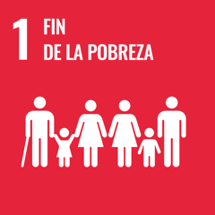
1. Fin de la pobreza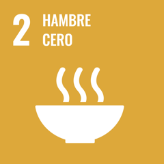
2. Hambre cero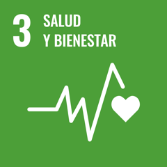
3. Salud y bienestar 4. Educación de calidad
4. Educación de calidad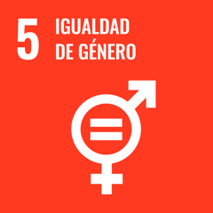
5. Igualdad de género 6. Agua limpia y saneamiento
6. Agua limpia y saneamiento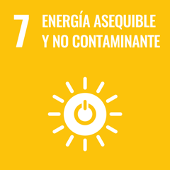
7. Energía asequible y no contaminante 8. Trabajo decente y crecimiento económico
8. Trabajo decente y crecimiento económico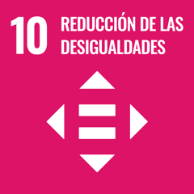
10. Reducción de las desigualdades 11. Ciudades y comunidades sostenibles
11. Ciudades y comunidades sostenibles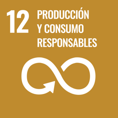
12. Producción y consumo responsables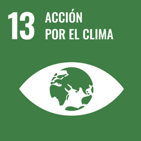
13. Acción por el clima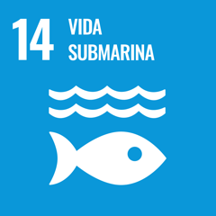
14. Vida submarina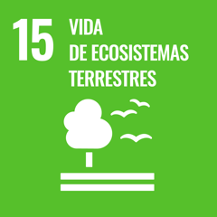
15. Vida de ecosistemas terrestres 16. Paz, justicia e instituciones sólidas
16. Paz, justicia e instituciones sólidas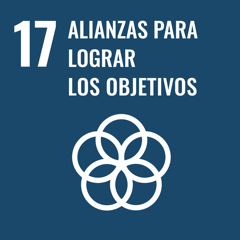
17. Alianzas para lograr los objetivos